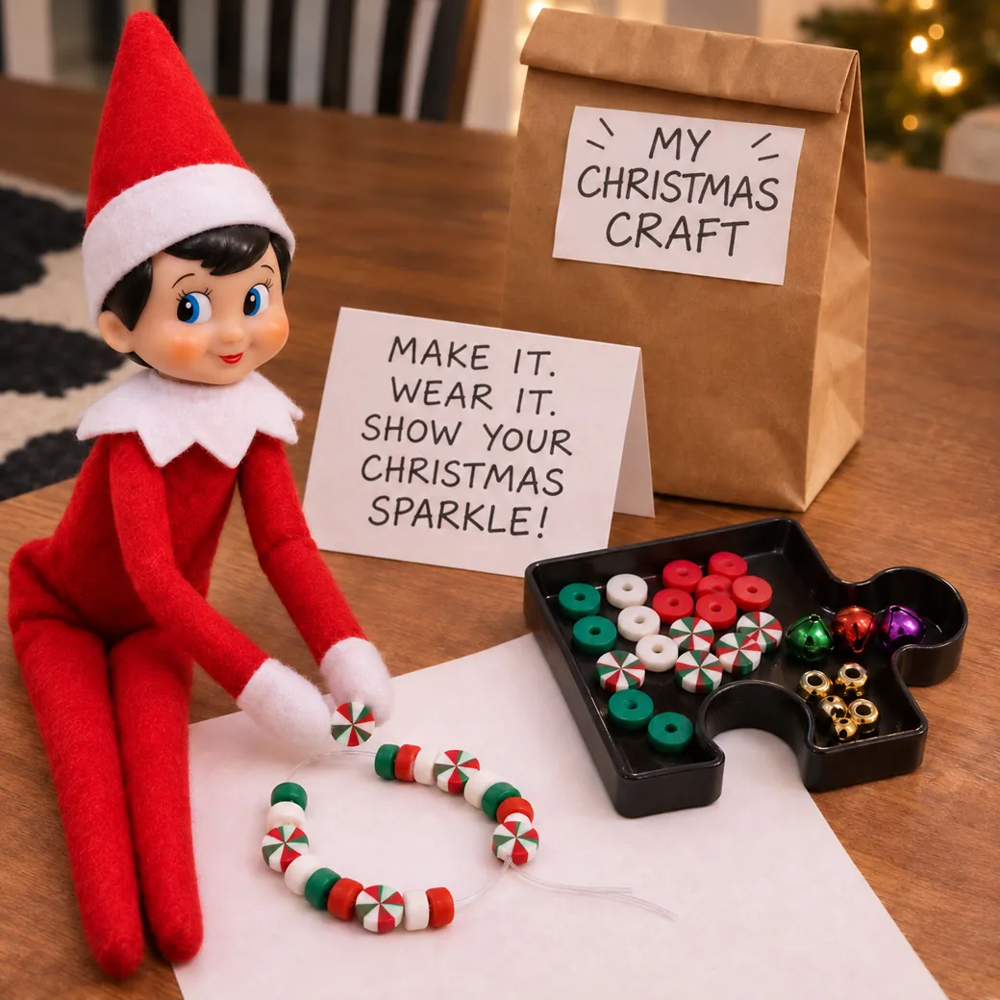
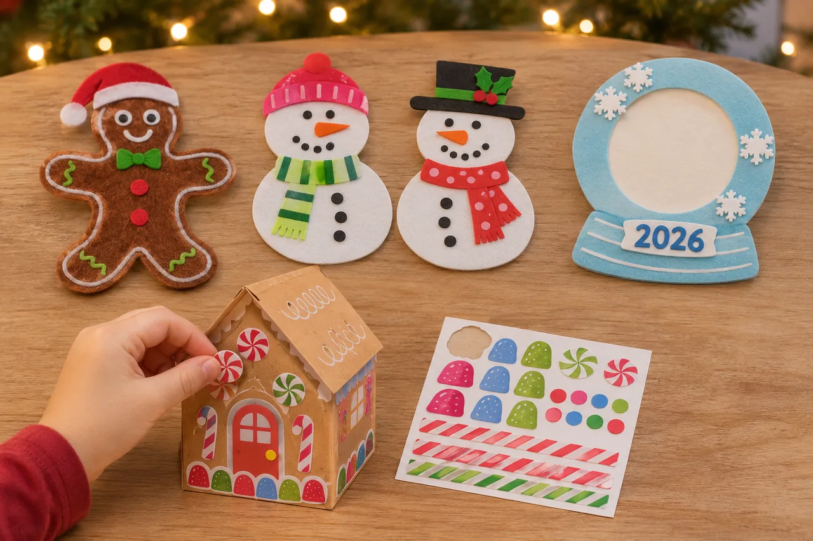
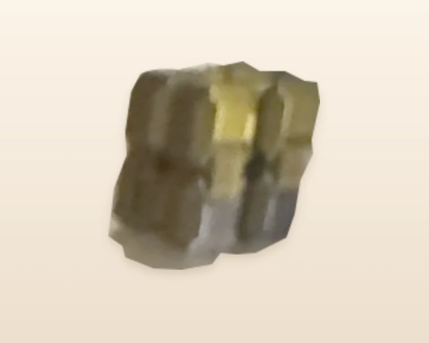
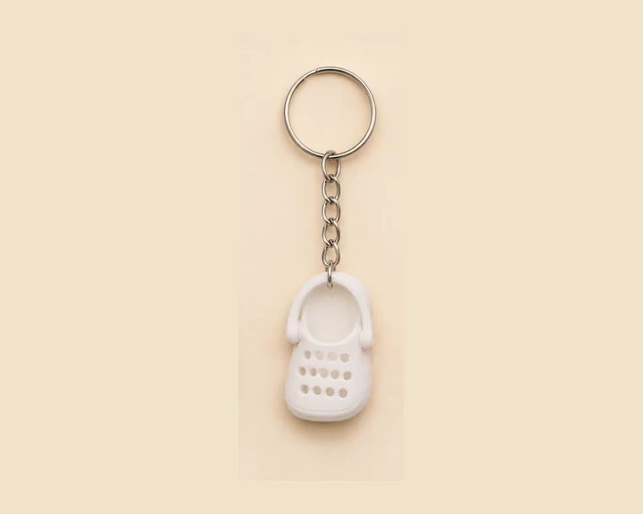

Child activity
My Christmas Bracelet
A little Christmas sparkle to make and wear. Your child designs and strings their own festive bracelet.
Ask about this craftSee the elf scene ideaOther crafts · the public gift shop
Hands-on Christmas activities and little handmade surprises from Glue Guns & Gossip. Ask us about individual craft options, availability, and pricing.

Five DIY projects · no elf needed
Make them together on a cozy afternoon, or save them for little holiday surprises throughout December.
Choose a “Your elf left a craft!” note or a Christmas Craft Night card. Same projects either way.
$15 per package
Please check your note choice in the order form’s Notes box.
Paper and craft materials only, not edible. Bring glue and tape for the house. Small parts; not for children under 3. We’ll confirm availability, pickup or shipping, and your total before payment.

A little Christmas sparkle to make and wear. Your child designs and strings their own festive bracelet.
Ask about this craftSee the elf scene idea
Decorate a festive mask, then show off a merry disguise. This is a craft for your child to make and wear.
Ask about this craftSee the elf scene idea
A secret mission to make a dried-fruit-and-spice potpourri gift for a parent, wrap it, and hide it until Christmas.
Ask about this craftSee the elf scene ideaPhotos show activity ideas. Elf doll and display props are not included. We’ll confirm your craft’s contents before payment.


Little 3D-printed gifts
Ask about fidgets, keychains, available designs, and colors for your next little gift.
Ask about a little giftThese crafts also appear in the elf scene gallery. Browse the kits and scene ideas to plan a few playful mornings.
Explore elf kit options